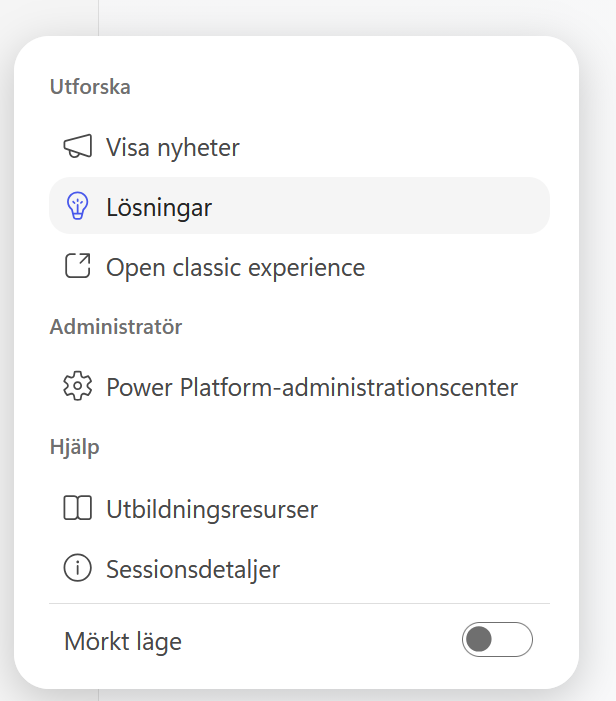
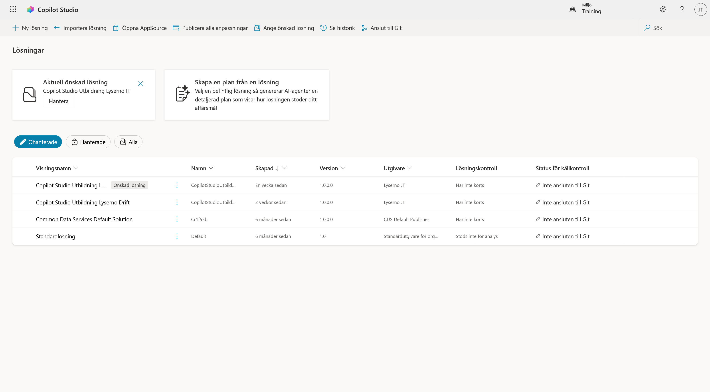
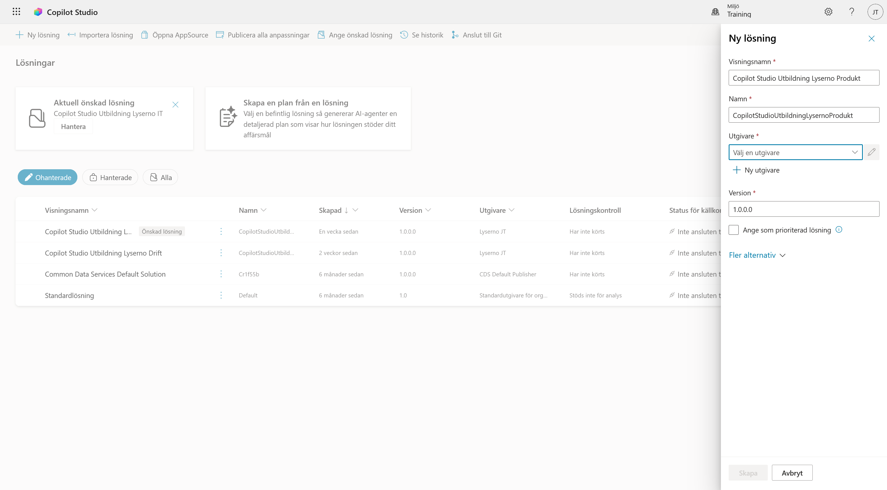
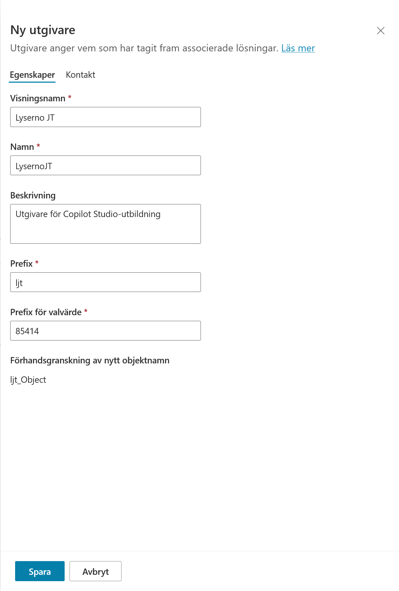
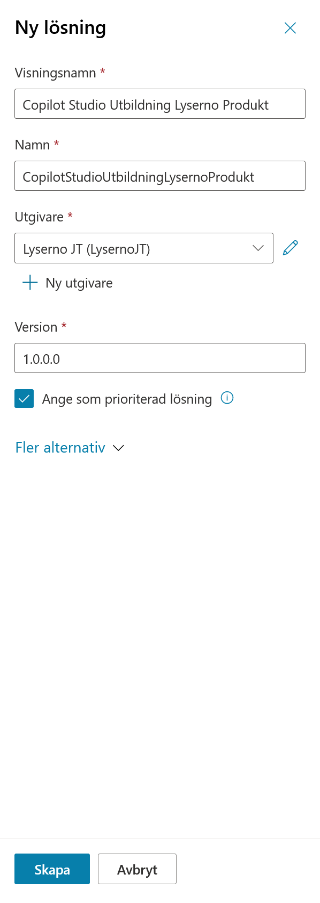
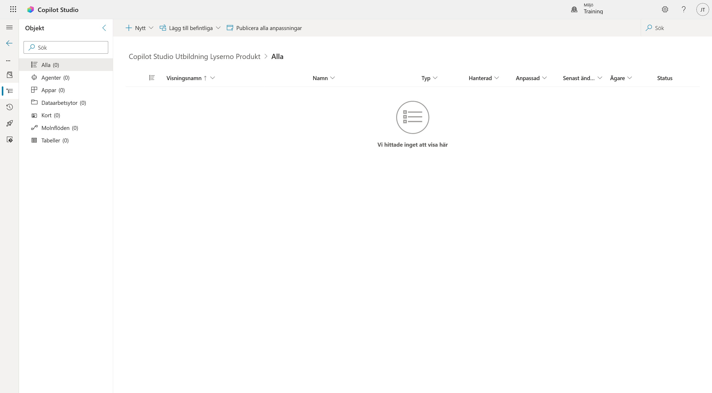
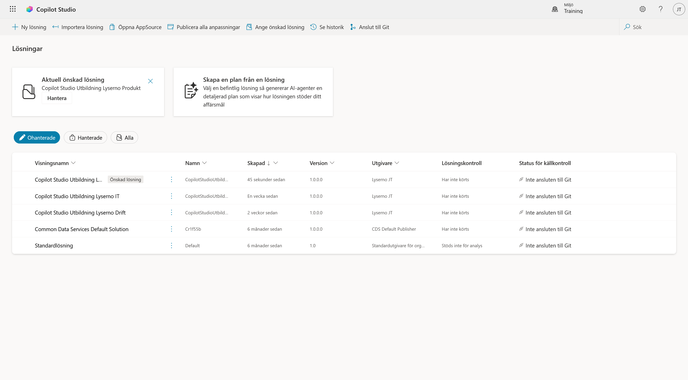

2. Skapa lösningen
I det här kapitlet skapar vi lösningen som ska samla Lyserno-agenten och de komponenter vi bygger senare i kursen. Vi skapar också en egen utgivare, så att komponenterna får ett eget prefix.
När kapitlet är klart har du:
- skapat en utgivare med dina initialer
- skapat lösningen Copilot Studio Utbildning Lyserno Produkt
- angett lösningen som prioriterad
- kontrollerat att rätt lösning visas som aktuell
Varför bygger vi i en lösning?
Lösningen samlar agenten, arbetsflödena och andra Power Platform-komponenter som hör ihop. Det förenklar förvaltning och gör det möjligt att senare flytta komponenterna mellan miljöer.
Del 1: Öppna Lösningar
I förra kapitlet öppnade du menyn med de tre punkterna längst ner i Copilot Studios vänsternavigering. Välj Lösningar.

Sidan Lösningar öppnas. Här visas lösningarna i den valda miljön och vilken lösning som är aktuell. Kontrollera att kursens utvecklingsmiljö visas högst upp till höger.
Bildens miljö heter Training. Du ska använda den personliga utvecklingsmiljö som du valde i föregående kapitel.
Välj + Ny lösning högst upp till vänster.

Del 2: Ange lösningens namn
Panelen Ny lösning öppnas från höger.
Fyll i följande visningsnamn:
Copilot Studio Utbildning Lyserno Produkt
Fältet Namn fylls normalt i automatiskt när du lämnar fältet Visningsnamn:
CopilotStudioUtbildningLysernoProdukt
Om namnet inte skapas automatiskt anger du visningsnamnet utan mellanslag.
Använd inte standardutgivaren. Välj + Ny utgivare under fältet Utgivare.

Del 3: Skapa en utgivare
Panelen Ny utgivare öppnas. Utgivaren anger vem som har skapat komponenterna och ger dem ett eget prefix.
Använd dina initialer. Exemplen nedan använder JT för Joel Thyberg.
| Fält | Värde |
|---|---|
| Visningsnamn | Lyserno JT |
| Namn | LysernoJT |
| Beskrivning | Utgivare för Copilot Studio-utbildning |
| Prefix | ljt |
| Prefix för valvärde | Lämna det automatiskt skapade värdet oförändrat |
Prefixet består av l följt av dina initialer med små bokstäver. Om du exempelvis heter Anna Svensson använder du Lyserno AS, LysernoAS och prefixet las.
Under Förhandsgranskning av nytt objektnamn ser du hur prefixet kommer att användas, exempelvis ljt_Object.
Välj Spara.

Del 4: Slutför lösningen
Du kommer tillbaka till panelen Ny lösning. Den nya utgivaren brukar väljas automatiskt. Om fältet fortfarande är tomt väljer du utgivaren i listan.
Kontrollera följande:
| Fält | Värde |
|---|---|
| Visningsnamn | Copilot Studio Utbildning Lyserno Produkt |
| Namn | CopilotStudioUtbildningLysernoProdukt |
| Utgivare | Din nya Lyserno-utgivare, exempelvis Lyserno JT (LysernoJT) |
| Version | 1.0.0.0 |
Markera Ange som prioriterad lösning och välj sedan Skapa.

Del 5: Kontrollera lösningen
När lösningen har skapats öppnas den automatiskt. Rubriken visar Copilot Studio Utbildning Lyserno Produkt och listan är tom. Det är väntat eftersom vi ännu inte har skapat agenten eller några andra komponenter.

Välj bakåtpilen i vänsternavigeringen för att återvända till sidan Lösningar.
Kontrollera att:
- Copilot Studio Utbildning Lyserno Produkt finns i listan
- lösningen är märkt som Önskad lösning
- kortet Aktuell önskad lösning visar samma lösning

Lösningen är klar
Lyserno-lösningen är skapad och prioriterad. Komponenterna vi bygger i kommande kapitel kan nu samlas på samma plats.
Återvänd till Copilot Studio
Du kan återvända till den nya Copilot Studio-upplevelsen på något av följande sätt:
- gå tillbaka till den tidigare webbläsarfliken där Copilot Studio är öppet
- välj Copilot Studio högst upp till vänster
I nästa kapitel skapar vi Lyserno Produktassistent, konfigurerar grundinställningarna och genomför ett första test.